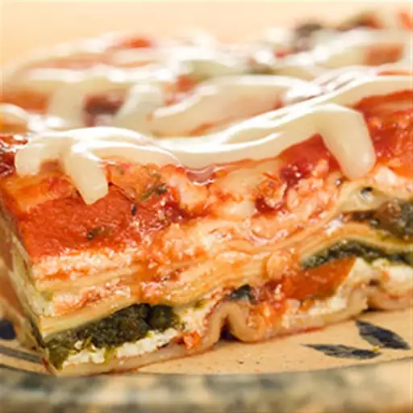

Easy Vegetable Lasagna Recipe

Description
This easy vegetable lasagna recipe is delicious! Cooking with canned foods, such as canned spinach, makes it even easier.
They also prevent food waste because they're perfectly portioned for recipes and nearly half the cost of fresh and frozen!
Ingredients
- 1 (28 ounce) can crushed tomatoes
- 1 large garlic clove, chopped
- 1 teaspoon dried basil
- 1/2 teaspoon salt
- 1/4 teaspoon ground black pepper
- 1 (15 ounce) container ricotta cheese
- 1 large egg
- 12 no-boil lasagna noodles
- 1 (14.5 ounce) can sliced carrots, well drained
- 1 (13.5 ounce) can chopped spinach, well drained
- 2 cups shredded mozzarella cheese
- 1/3 cup grated Parmesan cheese
Steps
- Preheat the oven to 375 degrees F (190 degrees C). Grease an 8x12-inch baking dish.
- Combine tomatoes, garlic, basil, salt, and black pepper in a medium saucepan over high heat; bring to a boil. Reduce heat to low; simmer to blend flavors, about 10 minutes. Combine ricotta cheese and egg in a bowl.
- Lightly coat the baking dish with tomato sauce; place 3 noodles on top, lengthwise. Top with ¼ remaining tomato sauce; spread ⅓ ricotta mixture on top with a rubber spatula. Scatter ⅓ each carrots and spinach on top, followed by ¼ mozzarella. Repeat layers twice more. Place remaining 3 noodles on top; top with remaining ¼ each tomato sauce and mozzarella. Sprinkle with Parmesan cheese.
- Cover dish with aluminum foil; bake 30 minutes. Remove foil and bake until cheese is bubbling and lightly brown, about 10 minutes more. Let stand before cutting, 15 minutes.
Home